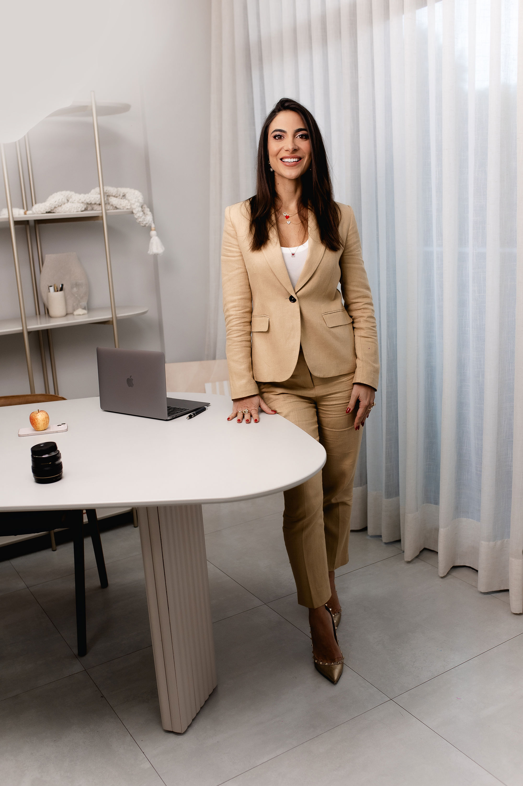
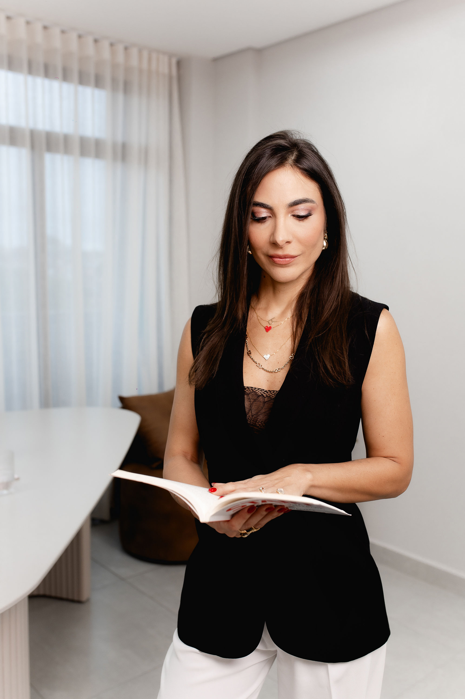
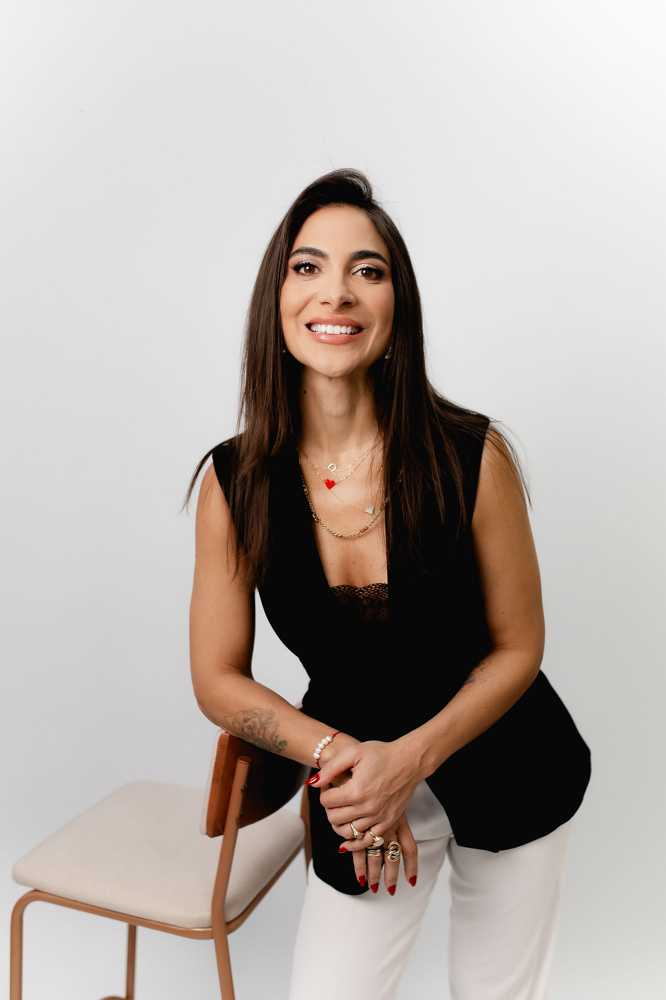
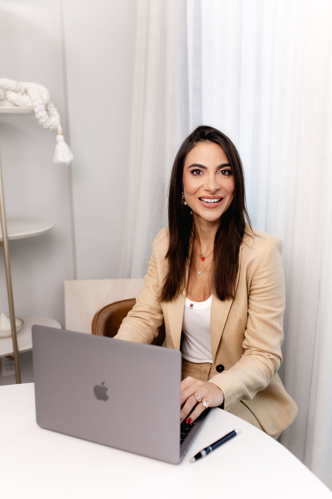
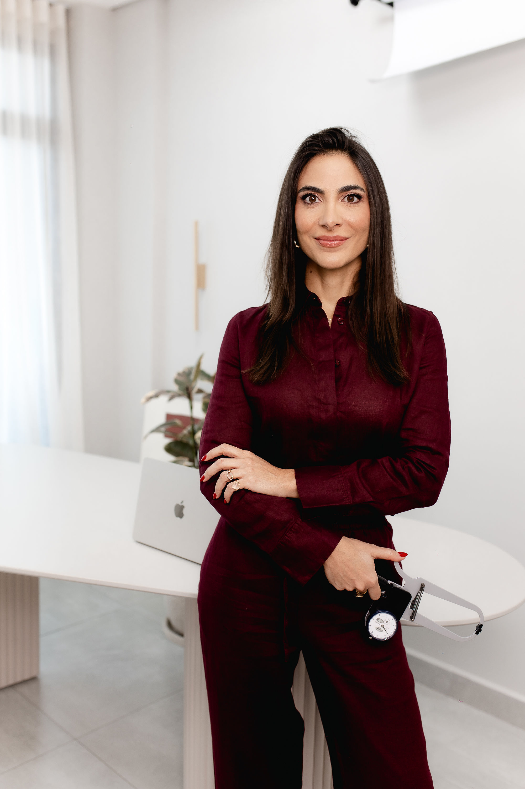
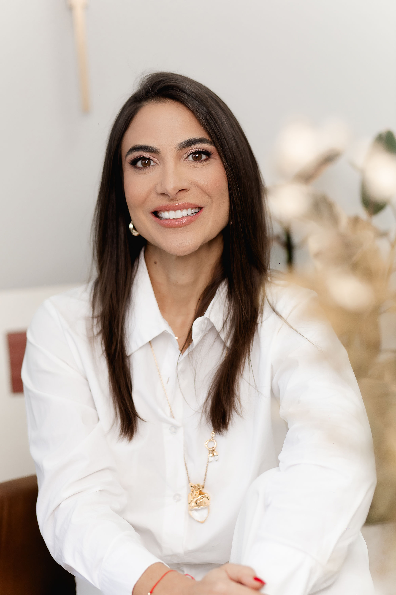
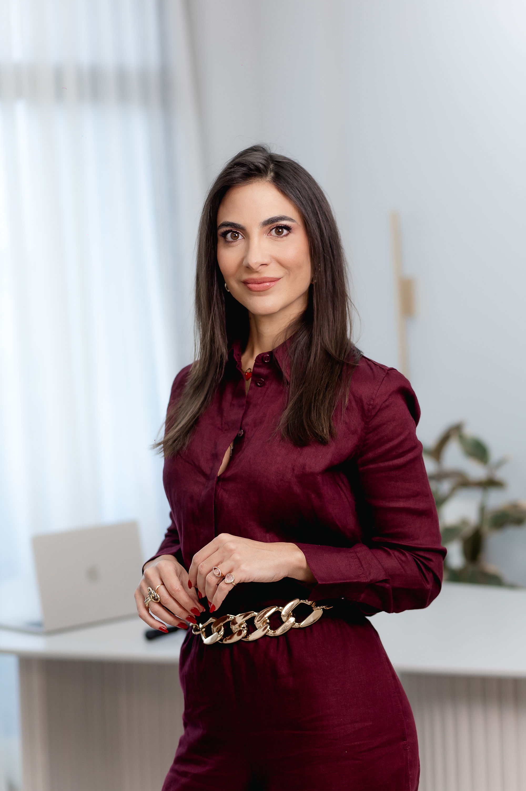
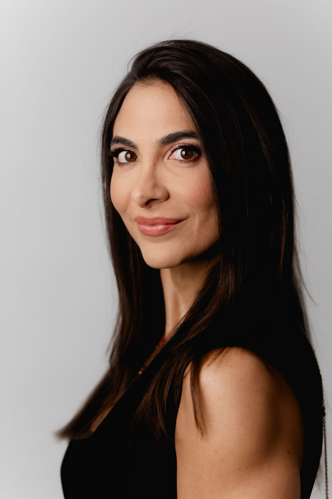

Nutrologia Clínica · Campinas, SP
Saúde da mulher, metabolismo, menopausa e longevidade — com olhar clínico aprofundado, base científica e cuidado genuíno com cada paciente.
CRM-SP 1306062


Sobre mim
Há mais de doze anos, tomei uma decisão que mudou tudo: cuidar de mim mesma de verdade. Mudei meus hábitos, transformei meu estilo de vida, entendi na prática o que significa prevenir antes de precisar tratar. Essa virada foi pessoal — e foi ela que moldou a médica que sou hoje.
O que começou como autocuidado foi crescendo, se aprofundando, e naturalmente se expandiu para a minha prática clínica. Hoje, é exatamente isso que me move: acompanhar pessoas nessa mesma transformação — incentivando o movimento, a prevenção, os exames de rotina, os hábitos que sustentam uma vida com mais energia e qualidade.
Foi nesse caminho que me apaixonei pela nutrologia — e, dentro dela, pela saúde da mulher a partir dos 40 anos. O climatério, a menopausa, as mudanças hormonais que transformam o corpo e a vida: essa é uma fase que exige atenção especializada, cuidado antes do problema aparecer, e um olhar clínico atento e atualizado. É aqui que encontro meu maior propósito.
Nutrologia Clínica
Saúde da mulher 40+
Instituto Wilson Mello · Campinas
CRM-SP 1306062
Especialidades
01
Cuidado especializado para a mulher na perimenopausa e menopausa — hormônios, sintomas, energia e bem-estar com abordagem médica completa.
02
Avaliação e condução da terapia hormonal com segurança e base científica atualizada, individualizada para cada mulher e cada momento de vida.
03
Tratamento médico do excesso de peso com investigação metabólica, suplementação e estratégias reais de mudança de hábito — sem atalhos.
04
Avaliação nutricional completa, identificação de deficiências e prescrição de suplementação baseada em exames e evidências científicas.
05
Olhar integrativo para antecipar riscos, preservar a saúde metabólica e garantir longevidade — com qualidade de vida real.
06
Estratégias práticas e sustentáveis para melhorar energia, sono, composição corporal e saúde a longo prazo.



Trajetória
Mais de 15 anos de trajetória clínica — da medicina de urgência à pesquisa clínica em nutrologia, passando pela medicina preventiva e de Checkup. Uma base sólida a serviço de um olhar integrativo e atualizado.
Hoje atendo no Instituto Wilson Mello, centro de excelência em Campinas, integrada a uma equipe multidisciplinar comprometida com o cuidado real de cada paciente.
Graduação · 2009
Medicina
Universidade José do Rosário Vellano – UNIFENAS, Alfenas-MG
Especialização · 2009–2011
Clínica Médica
Hospital Fundação Centro Médico de Campinas
Atuação · 2009–2014
Urgência, Clínica Médica e Pesquisa Clínica em Nutrologia
Campinas, SP
Atuação · desde 2014
Medicina Preventiva e Checkup
Checkup Campinas — visão integrativa e preventiva
Especialização · 2018
Nutrologia
Associação Brasileira de Nutrologia – ABRAN
Atualmente
Instituto Wilson Mello
Centro de excelência multidisciplinar · Campinas, SP


Vamos conversar
Estou aqui para te ouvir com atenção e construir juntos um caminho de saúde que faça sentido para a sua vida e para o seu momento.
Instituto Wilson Mello
Praça Capital · Edifício Chicago, 1º andar
Rua José Rocha Bonfim, 214 — Jardim Santa Genebra
CEP 13080-650 · Campinas, SP